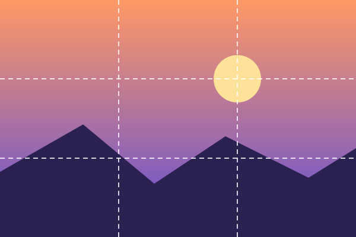
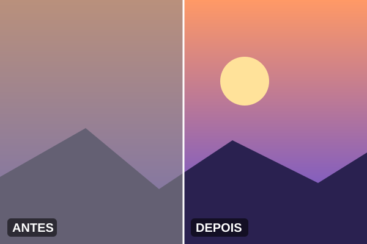
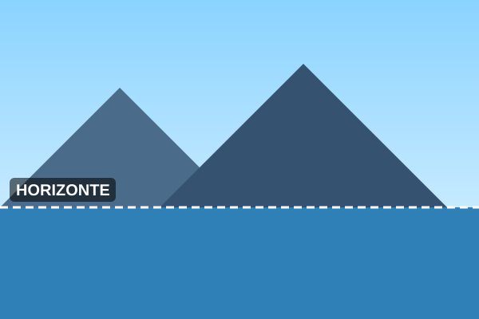
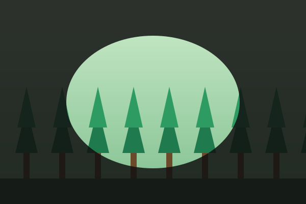
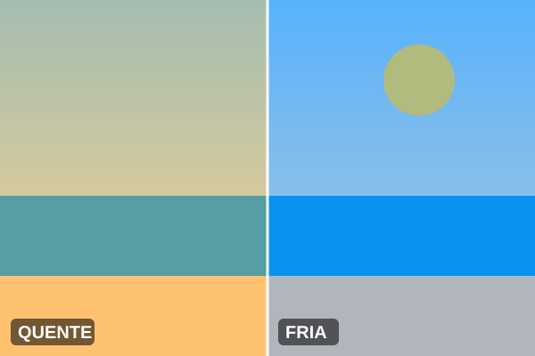

Galeria de aulas de foto
Cada imagem mostra uma ideia básica da edição de fotos.





Quer praticar? Cadastre-se como aluno.
Aprenda a editar vídeo, foto e áudio com quem já edita
Cada imagem mostra uma ideia básica da edição de fotos.





Quer praticar? Cadastre-se como aluno.